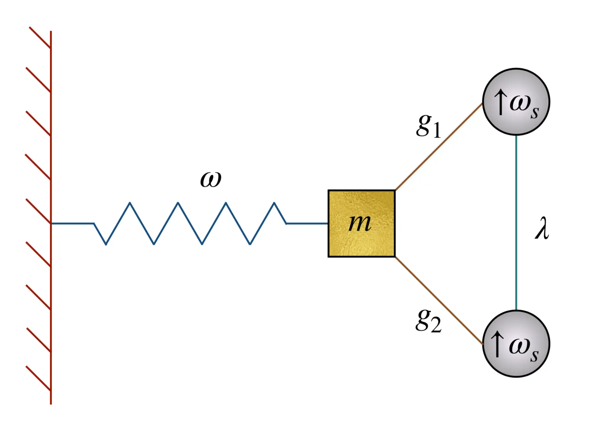
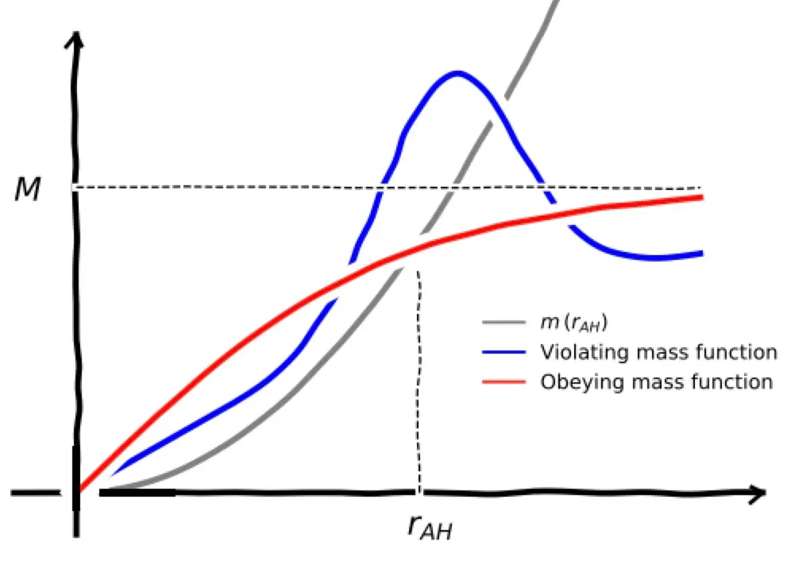
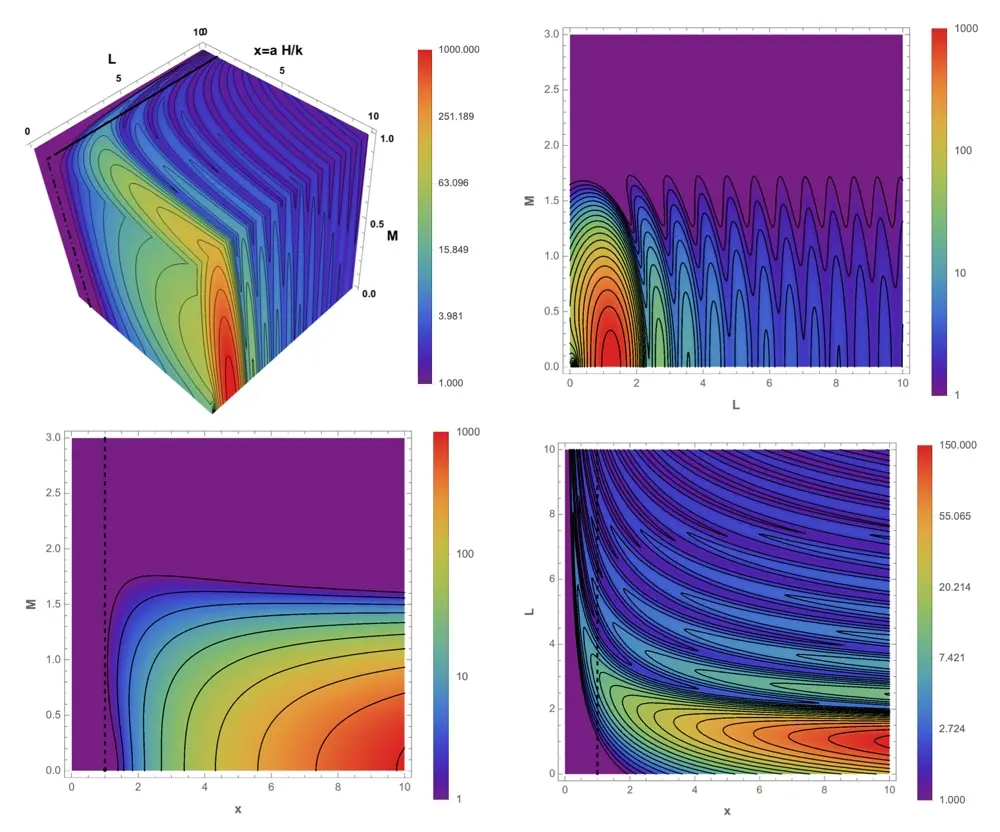
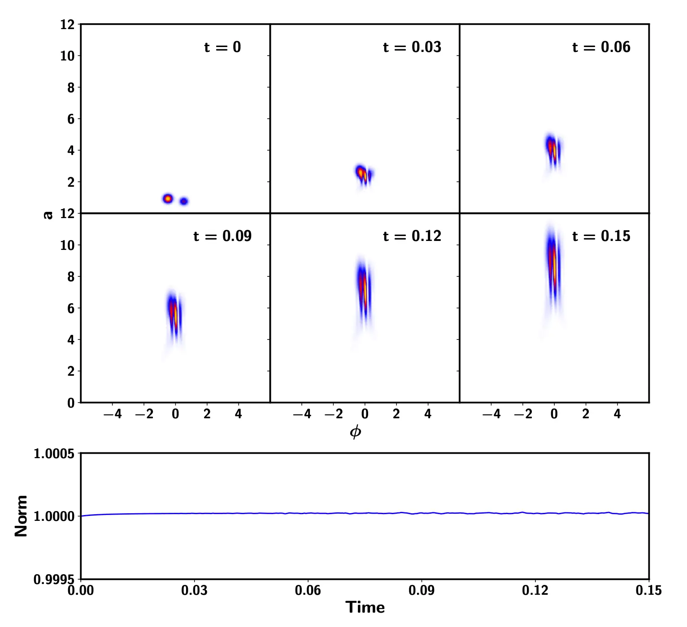
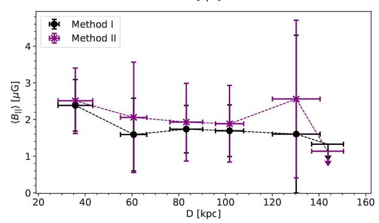
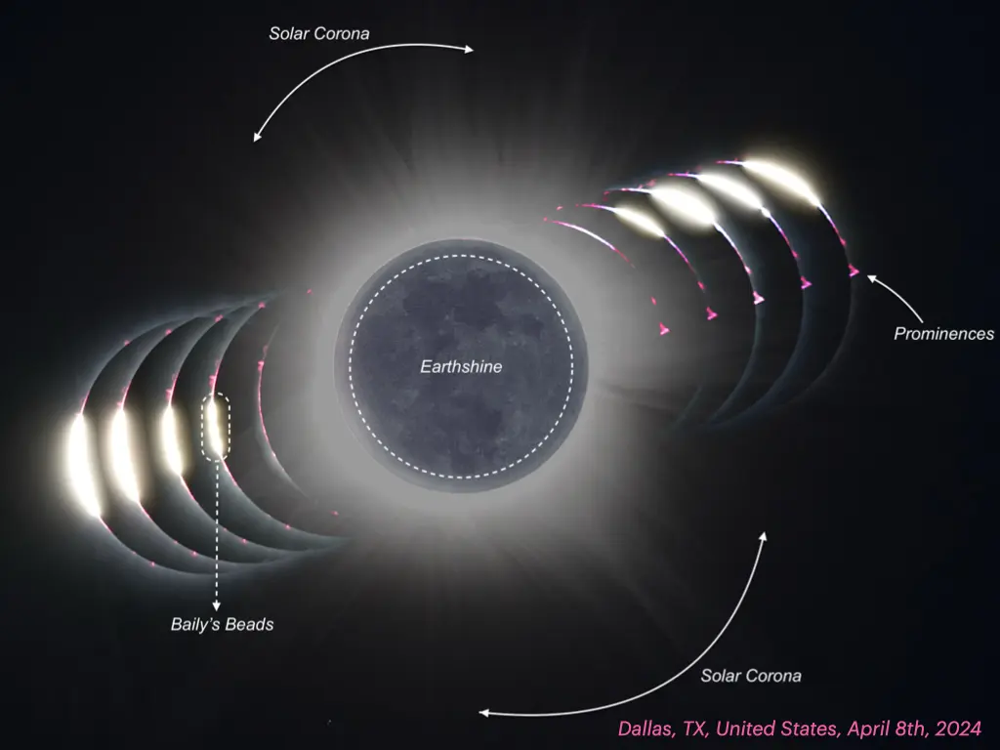
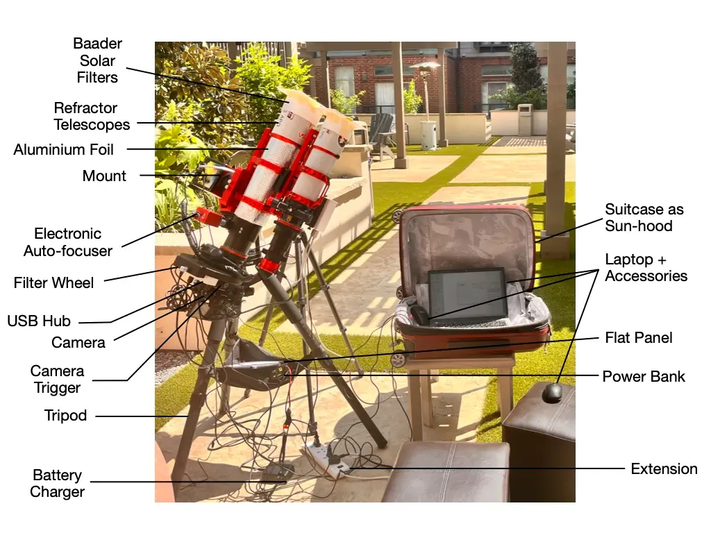
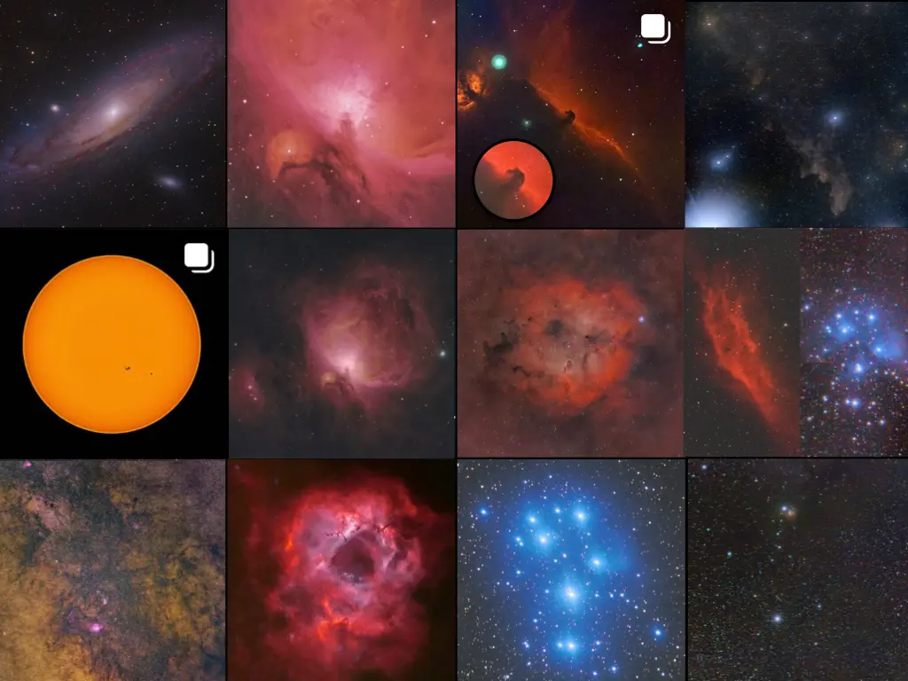

Research Overview
My research spans the quantum realm (of gravity, cosmology, information, and foundations), the classical realm (of numerical and mathematical relativity, cosmology, and astrophysics), and the border zone (quantum-classical interaction). You will also find me in the tangible zone of galactic and solar astronomy.
Research Highlights

(a) Double Edged Oscillator and Lessons for Gravity

(b) Penrose Inequality in AdS Space

(c) Schwinger Effect in dS space

(d) Matter-Gravity Entanglement

(e) Radial Profile of the Galactic Magnetic Field

(f) TSE2024
Academic Journey
Positions
- 2020 - Present: Assistant Professor, Department of Physics, IIT Delhi
- 2024 - Present: ICARD Coordinator at IIT Delhi
- 2022 - Present: Visiting Associate, IUCAA, Pune
- 2017 - 2020: Postdoctoral Researcher, Mitacs Accelerate Fellow, University of New Brunswick (joint project with EhEYE Inc)
- 2015 - 2017: Dr. D. S. Kothari Postdoctoral Fellow, University of Delhi, New Delhi
Education
- 2009 - 2014: Doctor of Philosophy, IUCAA, Pune. Advisor: T. Padmanabhan. Thesis: Aspects of Quantum Field Theory in Black Holes and Cosmological Spacetimes
- 2007 - 2009: Master of Science in Physics, University of Delhi (St. Stephen's College). Dissertation: Classical Mechanics and Quantum Mechanics using Geometric Algebra
- 2004 - 2007: Bachelor of Science (Honors) in Physics, University of Delhi (Hans Raj College). Dissertation: Quantum Mechanics Visualised
Publications
- S. Singh, S. Burman, B. Arora and P. Sharma, "Linear Polarimetry of the Solar Corona during the Total Solar Eclipse of 8 April 2024: Polarimetric Analysis, Coronal Electron Density and Magnetic Fields" (in preparation)
- S. Singh, P. Sharma, B. Arora, S. Burman and C. Gandhi, "Linear Polarimetry of the Solar Corona during the Total Solar Eclipse of 8 April 2024: Multi-Band Observations and HDR Imaging" (submitted to Solar Physics)
- S. Singh and B. Arora, "The Fleeting Laboratory: An Experimental Guide for Total Solar Eclipses" Accepted for publication
- H. S. Sahota, S. Singh and A. Pandita, "Nonlocal correlations of a test quantum field in gravitational collapse," Phys. Rev. D 112, no.12, 125017 (2025) [arXiv:2505.04701]
- S. Burman, S. Malik, S. Singh and Y. Wadadekar, "Unveiling Electron Density Profile in Nearby Galaxies using SDSS MaNGA," J. Cosmol. Astropart. Phys., (2026)060 [arXiv:2505.13677]
- S. Kaushal and S. Singh, "Backreaction inclusive Schwinger effect," [arXiv:2412.09436]
- S. Singh, "Thermodynamics of Gravity in Local Frames," [arXiv:2411.01868]
- S. Burman, P. Sharma, S. Malik and S. Singh, "Investigation of the radial profile of galactic magnetic fields using rotation measure of background quasars," JCAP 08, 063 (2024) [arXiv:2405.09623]
- V. Husain, I. Javed and S. Singh, "Dynamics and Entanglement in Quantum and Quantum-Classical Systems: Lessons for Gravity," Phys. Rev. Lett. 129 (2022), 111302 [arXiv:2205.06388]
- V. Husain and S. Singh, "Quantum backreaction on a classical universe," Phys. Rev. D 104 (2021), 124048 [arXiv:2109.12752]
- P. Samantray and S. Singh, "Schwinger Effect in Compact Space," Phys. Rev. D 103 (2021), 125012 [arXiv:2010.13453]
- V. Husain and S. Singh, "Matter-Geometry entanglement in quantum cosmology," Class. Quant. Grav. 37 (2020), 15LT01 [arXiv:1907.03776]
- V. Husain and S. Singh, "Semiclassical cosmology with backreaction: The Friedmann-Schrödinger equation and inflation," Phys. Rev. D 99 (2019), 086018 [arXiv:1811.03673]
- V. Husain and S. Singh, "Does quantum gravity relate the constants of nature?," Int. J. Mod. Phys. D 28 (2018), 1950015 [arXiv:1807.08704]
- P. Samantray and S. Singh, "Schwinger pair production in hot anti-de Sitter space," Phys. Rev. D 99 (2019), 085006 [arXiv:1804.04140]
- V. Husain and S. Singh, "Penrose inequality in anti de Sitter space," Phys. Rev. D 96 (2017), 104055 [arXiv:1709.02395]
- R. Sharma and S. Singh, "Multifaceted Schwinger effect in de Sitter space," Phys. Rev. D 96 (2017), 025012 [arXiv:1704.05076]
- S. Singh, "From Quantum to Classical in the Sky," Fundam. Theor. Phys. 187 (2017), 397-409 [arXiv:1607.02736]
- S. Singh and P. Singh, "It's a dark, dark world: Background evolution of interacting CDM models beyond simple exponential potentials," JCAP 05 (2016), 017 [arXiv:1507.01535]
- S. Chakraborty, S. Singh and T. Padmanabhan, "A quantum peek inside the black hole event horizon," JHEP 06 (2015), 192 [arXiv:1503.01774]
- S. Singh, "Excavations at the gravitationally collapsed site: Recent findings," J. Phys. Conf. Ser. 600 (2015), 012035 [arXiv:1412.1028]
- S. Singh and S. Chakraborty, "Black hole kinematics: The "in"-vacuum energy density and flux for different observers," Phys. Rev. D 90 (2014), 024011 [arXiv:1404.0684]
- S. Singh, S. K. Modak and T. Padmanabhan, "Evolution of quantum field, particle content and classicality in the three stage universe," Phys. Rev. D 88 (2013), 125020 [arXiv:1308.4976]
- M. Smerlak and S. Singh, "New perspectives on Hawking radiation," Phys. Rev. D 88 (2013), 104023 [arXiv:1304.2858]
- S. Singh, C. Ganguly and T. Padmanabhan, "Quantum field theory in de Sitter and quasi-de Sitter spacetimes revisited," Phys. Rev. D 87 (2013), 104004 [arXiv:1302.7177]
- S. Singh and T. Padmanabhan, "Complex Effective Path: A Semi-Classical Probe of Quantum Effects," Phys. Rev. D 85 (2012), 025011 [arXiv:1112.6279]
Grants, Fellowships & Awards
Grants
- 2022 - 2025: New Faculty Seed Grant (IIT Delhi), INR 2 million
- 2022 - 2025: SERB Core Research Grant CRG/2021/003053 (Govt. of India), INR 3.8 million
- 2020 - Present: Professional Development Allowance (IIT Delhi), INR 300,000 every 3 years
- 2022: Department Grant (IIT Delhi), INR 120,000
- 2021: Department Grant (IIT Delhi), INR 200,000
- 2020 - 2023: Young Faculty Incentive (IIT Delhi), Additional Remuneration of INR 25,000 p.m.
- 2020: New Faculty Grant (IIT Delhi), INR 100,000
Fellowships & Awards
- 2018: MITACS Accelerate Fellowship
- 2018: UNB Postdoctoral Fellowship, University of New Brunswick
- 2017: Article PRD 96(2):025012 featured in Physical Review D Kaleidoscope
- 2017: SERB Overseas Postdoctoral Fellowship, DST (Govt. of India)
- 2015: V. V. Narlikar Best Thesis Award, IAGRG
- 2015: Dr. D. S. Kothari Postdoctoral Fellowship, UGC (Govt. of India)
- 2009: Dr. Shyama Prasad Mukherjee Fellowship, CSIR (Govt. of India)
- 2007: Jiwa Ram Shakuntala Kaushal Prize in B.Sc. (H) Physics (II)
- 2007: Smt. Lajwanti and Rajrani Memorial Prize in B.Sc. (H) Physics (II) (Rank I in Hans Raj College and II in the University)
Talks, Organizing & Conferences
Selected Conference Talks & Invited Seminars
- "Gravitational Collapse in Numerical Relativity", 2nd School on Black Holes and Gravitational Waves, IIT Madras (Feb 2025)
- "Astronomy: Shaping Human Thinking and Skills since Ancient Times", Republic Day Special Session, Center for Theoretical Physics, Jamia (Jan 2025)
- "Total Solar Eclipse: Observing the otherwise hidden", ISSAC 2024, St. Stephen's College (Nov 2024)
- "Cosmic Distance Ladder", Pedagogic workshop, St. Stephen's College (Nov 2023)
- "Dynamics and entanglement in quantum and quantum-classical systems", EREP 2022, Salamanca, Spain (Aug 2022)
- "Entanglement in Gravity-Matter Systems", Sesh@60 Meet, India (April 2021)
- "Quantum Themes in Expanding Cosmos", AGR 2019, UNB Fredericton (May 2019)
- "About Processes: Natural and Artificial", Job Talk at IIT Delhi (May 2019)
- "Penrose inequality in Anti de Sitter space", IUCAA (Dec 2018) & JCAP-CGRRA (June 2018)
- "Multifaceted Schwinger Effect in De Sitter Space", Atlantic GR 2017 (May 2017)
- "A quantum peek inside the black hole event horizon", ICGC 2015, IISER Mohali (Dec 2015)
- "Aspects of Quantum Field Theory in Black Holes and Cosmology", V.V. Narlikar Award Talk, IAGRG (March 2015)
- "Zip Zap Zoom", X FTAG (Dec 2014), UNB (Sep 2014), Perimeter Institute (Sep 2014)
- "A complex path to reality", Université de Montréal (Sep 2014)
- "Black Holes up, close and personal", UNB (Sep 2014) & Spanish Relativity Meeting (Sep 2014)
- "New perspectives on Hawking radiation", IRC, University of Delhi (May 2014)
- "De Sitter Musings", 27th IAGRG, Garwhal (March 2013)
Organizing Activities
- May 2026: Scientific Organizing Committee Member, 34th IAGRG Meeting
- Dec 2026: LOC Chair, ASI Symposium on Solar Eclipses at IIT Delhi
- April 2026: Organizer, Frontiers in Cosmology and Astrophysics at IIT Delhi
- Jan 2025: Organizer and Session Chair for CQG Session 33rd IAGRG Meeting
- Oct 2021: International Organizing Committee Member, AAPPS-DACG Workshop 2021
- April 2021: Organizer, The first quantum Gravitation and Astrophysics Meet, Delhi
- May 2019: LOC Member, Atlantic GR 2019, UNB Fredericton
- 2017 - 2018: Coordinator, Group meeting, seminars for Gravity Group at UNB Fredericton
- 2015 - 2017: Coordinator, Talks, seminars and arXiv discussions at IRC, Delhi
Workshops & Conferences
- Invitee: Celebrating Belgian and Indian Heritage by H.E. Mr. Didier Vanderhasselt (Nov 2025)
- Invited Speaker: 4th BINA Workshop (Nov 2025) & RQI Nord Meeting, Italy (Jun 2025)
- Invited Participant: Belgium Embassy Event hosting HRH Princess of Belgium (April 2025)
- Invited Lecturer/Speaker: 2nd School on Black Holes (Feb 2025), IAGRG Meeting (Jan 2025), IOAA Junior Camp (Nov 2024), ISSAC (Nov 2024), Winter Immersion Programme at IITD Abu Dhabi (Dec 2023)
- Invited Lecture: Pedagogic workshop, St. Stephens College (Nov 2023)
- By Invitation: QGORRI, RRI Bengaluru (Sep 2023)
- Invited Speaker: Observables in Quantum Gravity, IISER Mohali (Mar 2023)
- Invited Key Speaker: CosPA 2022 (Nov 2022) & Current Status of Cosmology (Oct 2022)
- Participant: EREP 2022, IWPSD 2021 (Judge), 4th Shivalik HEPCATS (Chair), Atlantic GR 2019, JCAP-CGRRA 2018, Atlantic GR 2017, ICTP Summer School 2016, ICGC 2015, IAGRG 2015, X FTAG 2014, Spanish Relativity Meeting 2014, GR-20/Amaldi-10 2013, 27th IAGRG 2013, ICGC 2011, 3rd HOPE Meeting 2011
Teaching & Advising
Teaching
Courses taught at IIT Delhi:
- PYL 122: Quantum Mechanics
- PYL 127: Classical Mechanics & Relativity
- PYL 551: Classical Mechanics
- PYL 800: Numerical and Computational Methods in Research
- PYL 741: Field Theory and QED
- PYV 438: Selected Topics in Theoretical Physics
- PYL 742: General Relativity and Introductory Astrophysics
- PYL 332: General Relativity and Cosmology
- Guest Lectures: NIN100, PYN 101
- Labs: Engineering Physics II and UG First Year Physics
- Postdoc Lecture Session, Quantum Field Theory in External Backgrounds (Atlantic GR 2017)
- Guest Instructor, Scientific computing with Scilab (CPDHE, UGC, Oct 2016)
- Lab Instructor, Scientific computing (Fall 2015/2016)
- Teaching Assistant at IUCAA/IISER: Quantum mechanics & General Relativity and Cosmology
Advising & Mentorship
- Postdoctoral Researchers: Dr. Harkirat Singh Sahota, Dr. Shagun Kaushal, Dr. Haridev S R
- Doctoral Students:
- Aneet Kaur (jointly supervised with Prof. Ashmeet Singh, Physics IITD) - Quantum Cosmology and Reference Frames
- Ashish Pandita - Gravitational Lensing in Dynamical Spacetime
- Shivam Burman - Probing the structure of Magnetic fields and Electron Density Distribution in Galaxies and their Environments
- Masters Projects:
- Piyush Sharma - Gravitational Collapse and Criticality
- Anusha Mahapatra - Radiative Transfer in Astrophysics and Pulsar Astronomy
- Sneha K - Finding Neptune using Uranus à la Le Verrier and Adams
- Ashish Pandita - Thermodynamic Properties of Black holes using Membrane Paradigm
- Harsh Joon - Hydrostatic Equilibrium and beyond in Stellar System, Asteroseismology and ML Applications in detecting Exoplanets
- Undergraduate (B. Tech Projects and SURA):
- Dhruv Lilla & Vansh Shukla - BTP: Study of Weak Cosmic Censorship in Gravitational Collapse
- Khushi Aggarwal - BTP: Profiling Magnetic Fields in High Redshift galaxies
- Satwik Mittal & Harshil Jain - BTP: Building the 21cm Radio Horn Antenna and detecting the rotation of milky way
- Shrijan Samir Roy & Tanmay Singh - BTP: The physics of solar corona
- Paras Sharma - BTP: Estimating galactic magnetic fields using MgII absorbers and background quasars
- Sukanya Ghosal - BTP: sQED in inflationary de Sitter spacetime
- Sonakshi Gupta & Ishan Jain - BTP: Determination of Hubble Constant from SNe
- Sonakshi Gupta & Sukanya Ghosal - BTP: Quantum Effects in the Early Universe and the Cosmological Perturbation Theory
- Prakhar Bangaria & Sibasish Mishra - BTP: FRBs and Cosmological Evolution
- Prasoon Bajpai - SURA: Noise reduction in Astronomy
- Satvik Pandey & Parth Varshney - SURA: Extremely Low Noise Receiver for Radio Jove Observations (Jointly with Prof. Shouri Chatterjee, EE IITD)
- Other Mentorship:
- Katyayani Singh
- Amish Tiwari
- Chaitanya Gandhi & Yogesh Rawat
- Jahsanpreet Singh Dhingra
- Ishaan Jain
- Rahul Singh
- Final batch of 3 school students for the International Olympiad in Astronomy and Astrophysics
Service, Memberships & Outreach
Academic Service
- Member: Committee for policy-making GLOBE Award (2026)
- Member: THRUST Group under Dean (International Relations) (2025-)
- Coordinator: Department Time-Table In-charge (2025-, 2020-)
- Committees: Webmaster and Internal Website (2021), Science Day Open House (2021-2025), Institute Open House (2023, 2024), TA Allotment (2021-2025), Journal Club (2021-), PhD Interview Panel (2021-2022), Hiring Committee (2020-), Proctorial Committee Satpura Hostel (2022-2024)
- Faculty Coordinator: Physics and Astronomy Club (2021-)
- Weak Student Adviser: 2021 Undergraduate Batch (2021-)
- SRC Member: Rahul (Prof. Rana Nandi), Rakesh (Prof. HK Malik)
Refereeing & Memberships
- Referee: Research Proposal (OPUS) & SONATA BIS GRANT (National Science Center, Poland); General Relativity and Gravitation; Journal of Astrophysics and Astronomy; Canadian Journal of Physics; Europhysics Letters; Modern Physics Letters A
- Memberships: RQI COST Action Working Groups 2 and 4, IUCAA Pune, ISQG, DACG (AAPPS EXCO Member), IAGRG, Fredericton Astronomy Club
Outreach Activities
- Organizer: IIT Delhi Physics and Astronomy Club Observation Nights (Mar 2026)
- Keynote Speaker: Instrumentation in Astronomy at AESCAP (Dec 2025)
- Public Talks: Nehru Planetarium (Oct 2025), National Science Centre (May 2025), Centre for Theoretical Physics JMI (Sept 2024)
- Invited Judge: National Science Seminar, VITM Bengaluru (Oct 2025)
- Keynote Speaker: STEAM Conclave 2025 at Shiv Nadar School (Jan 2025)
- Invited Talks: Delhi Technical University (July 2024), ASTROCOSMOCON SGT Gurugram (Nov 2023), IIT Madras (Sep 2023), DGC Gurugram (May 2022), NCERT Nurturance program (Jan 2022), CUTN (June 2021)
- School Interactions: International Moon Day Celebrations with Smile Foundation
- Media: TV interview on Doordarshan (Mar 2024), CBC TV (April 2019)
- Lectures: Sci-Tech Spins Lecture Series at IIT Delhi (Dec 2021)
- Prior Activities: Public Talks and Activities at Fredericton Astronomy Club, AARMS Girl guide camp, Science Day at IUCAA
Observational Astronomy
I am also an avid observational astronomer and have some fancy equipment of my own. I actively undertake research trips to capture eclipses and cosmic events.
Research Trips
- April 20, 2023: Total Solar Eclipse in Exmouth, Western Australia
- April 08, 2024: Total Solar Eclipse in Dallas, Texas, United States

The equipment used in the experiment for collecting the polarization of the solar corona during the total solar eclipse in 2024.

Optical data of M31 and the nebulae in the Milky Way (M42, Barnard 33, IC 2118, IC 1396, M45, NGC 1499, M8 and the Center of Milky Way, Caldwell 49, and IC 348) and the Sun.
The Total Solar Eclipse of April 8 2024.